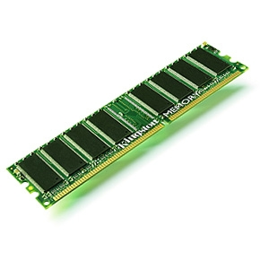
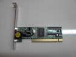
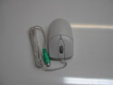

- RAM
- Memory on a computer usually refers to RAM, or Random Access Memory, and is where data is loaded temporarily while a process runs.

- USB Ports
- A USB port is a standard cable connection interface for personal computers and consumer electronics devices. USB stands for Universal Serial Bus, an industry standard for short-distance digital data communications. USB ports allow USB devices to be connected to each other with and transfer digital data over USB cables.

- Video Card
- A video card connects to the motherboard of a computer system and generates output images to display. Video cards are also referred to as graphics cards. Video cards include a processing unit, memory, a cooling mechanism and connections to a display device.

- PCI Fax Modem Card
- A Network interface card (also known as a NIC, network card, or network interface controller) is an electronic device that connects a computer to a computer network, usually a LAN. It is considered a piece of computer hardware.

- Mouse
- It is called a computer mouse because of the wire that connects the mouse to the computer. The people who designed it thought that it looked like the tail on a mouse. Today, many computer mice use wireless technology and have no wire.